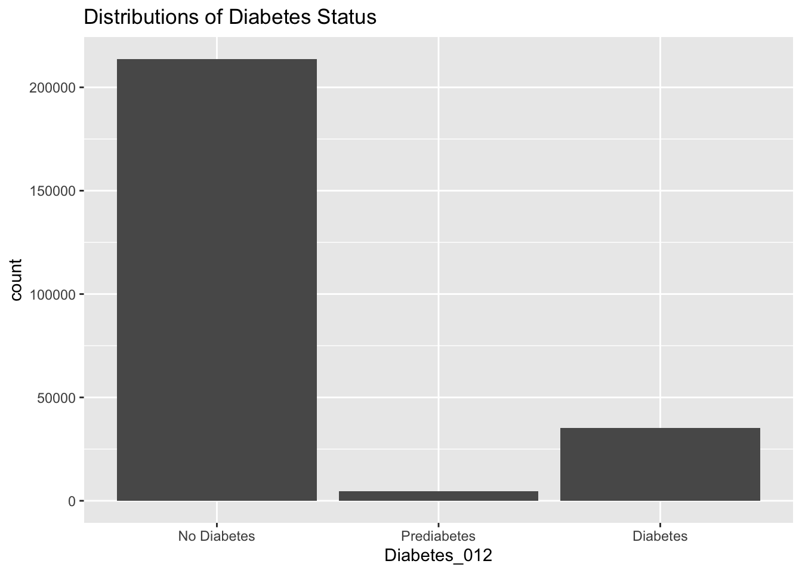
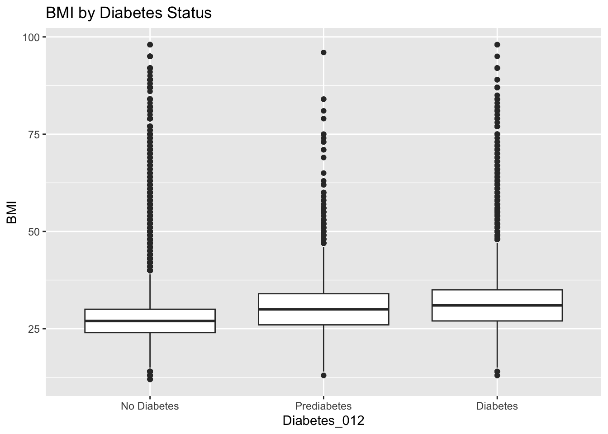
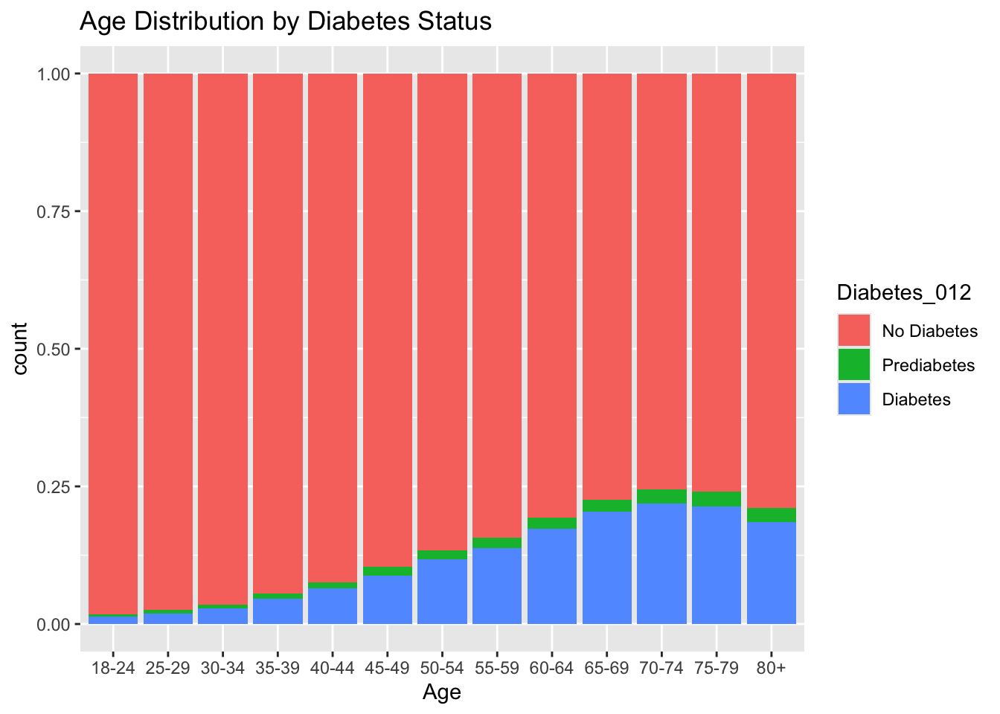
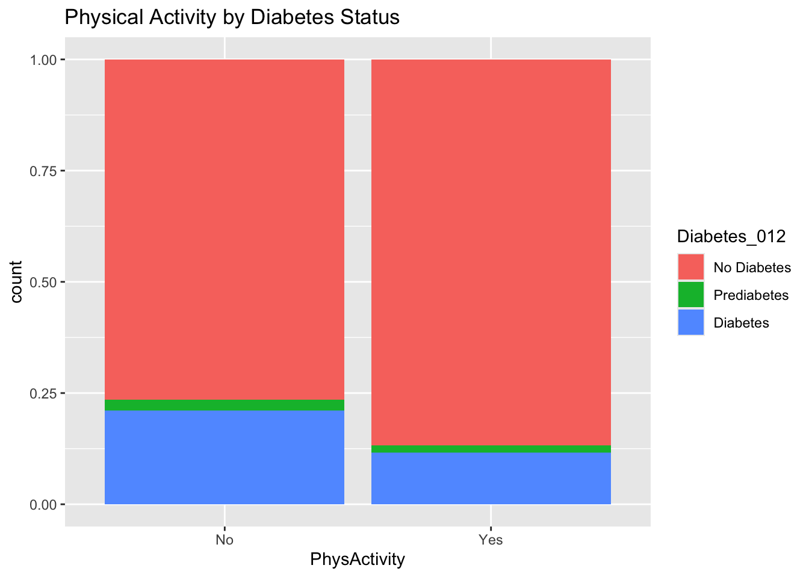

Rows: 253680 Columns: 22
── Column specification ────────────────────────────────────────────────────────
Delimiter: ","
dbl (22): Diabetes_012, HighBP, HighChol, CholCheck, BMI, Smoker, Stroke, He...
ℹ Use `spec()` to retrieve the full column specification for this data.
ℹ Specify the column types or set `show_col_types = FALSE` to quiet this message.
# A tibble: 253,680 × 22
Diabetes_012 HighBP HighChol CholCheck BMI Smoker Stroke
<fct> <fct> <fct> <fct> <dbl> <fct> <fct>
1 No Diabetes Yes Yes Yes 40 Yes No
2 No Diabetes No No No 25 Yes No
3 No Diabetes Yes Yes Yes 28 No No
4 No Diabetes Yes No Yes 27 No No
5 No Diabetes Yes Yes Yes 24 No No
6 No Diabetes Yes Yes Yes 25 Yes No
7 No Diabetes Yes No Yes 30 Yes No
8 No Diabetes Yes Yes Yes 25 Yes No
9 Diabetes Yes Yes Yes 30 Yes No
10 No Diabetes No No Yes 24 No No
# ℹ 253,670 more rows
# ℹ 15 more variables: HeartDiseaseorAttack <fct>, PhysActivity <fct>,
# Fruits <fct>, Veggies <fct>, HvyAlcoholConsump <fct>, AnyHealthcare <fct>,
# NoDocbcCost <fct>, GenHlth <dbl>, MentHlth <dbl>, PhysHlth <dbl>,
# DiffWalk <fct>, Sex <fct>, Age <fct>, Education <fct>, Income <fct>
Now let’s check the data for missingness.
sum(is.na(diabetes_data_fixed))
[1] 0
No missing data! Now we can move on to the summarizations.
Diabetes_012 HighBP HighChol CholCheck BMI
No Diabetes:213703 No :144851 No :146089 No : 9470 Min. :12.00
Prediabetes: 4631 Yes:108829 Yes:107591 Yes:244210 1st Qu.:24.00
Diabetes : 35346 Median :27.00
Mean :28.38
3rd Qu.:31.00
Max. :98.00
Smoker Stroke HeartDiseaseorAttack PhysActivity Fruits
No :141257 No :243388 No :229787 No : 61760 No : 92782
Yes:112423 Yes: 10292 Yes: 23893 Yes:191920 Yes:160898
Veggies HvyAlcoholConsump AnyHealthcare NoDocbcCost GenHlth
No : 47839 No :239424 No : 12417 No :232326 Min. :1.000
Yes:205841 Yes: 14256 Yes:241263 Yes: 21354 1st Qu.:2.000
Median :2.000
Mean :2.511
3rd Qu.:3.000
Max. :5.000
MentHlth PhysHlth DiffWalk Sex Age
Min. : 0.000 Min. : 0.000 No :211005 Female:141974 60-64 :33244
1st Qu.: 0.000 1st Qu.: 0.000 Yes: 42675 Male :111706 65-69 :32194
Median : 0.000 Median : 0.000 55-59 :30832
Mean : 3.185 Mean : 4.242 50-54 :26314
3rd Qu.: 2.000 3rd Qu.: 3.000 70-74 :23533
Max. :30.000 Max. :30.000 45-49 :19819
(Other):87744
Education Income
No Schooling : 174 >$75,000 :90385
Elementary : 4043 $50,000-$75,000:43219
Some High School: 9478 $35,000-$50,000:36470
High School Grad: 62750 $25,000-$35,000:25883
Some College : 69910 $20,000-$25,000:20135
College Grad :107325 $15,000-$20,000:15994
(Other) :21594
Now, we can move on to the visualization plots.
#Showing visualization plots#Distribution of diabetes statuslibrary(ggplot2)ggplot(diabetes_data_fixed, aes(x = Diabetes_012)) +geom_bar() +ggtitle("Distributions of Diabetes Status")

As shown in the graph, it looks like most of the participants (over 200,000) in the study do not have diabetes. There are approximately 35,000 people who do have diabnetes, and about 5,000 people who have prediabetes.
#BMI by Diabetesggplot(diabetes_data_fixed, aes(x = Diabetes_012, y = BMI)) +geom_boxplot() +ggtitle("BMI by Diabetes Status")

The IQR range of the BMI of people with diabetes is higher than the IQR range of the BMI of people without diabetes. Based off of this, it can be suggested that the BMI is higher for people with diabetes versus people who do not have diabetes.
#Age distribution by Diabetes Statusggplot(diabetes_data_fixed, aes(x = Age, fill = Diabetes_012)) +geom_bar(position ="fill") +ggtitle("Age Distribution by Diabetes Status")

As shown in this stacked bar plot, the distribution looks relatively normal but skewed to the left as the age of participants increased. This suggests that the count of people with diabetes is connected to the age of participants; as the age increased, the likelihood of diabetes also increases.
#Bar plot of physical activity by Diabetes statusggplot(diabetes_data_fixed, aes(x = PhysActivity, fill = Diabetes_012)) +geom_bar(position ="fill") +ggtitle("Physical Activity by Diabetes Status")

This stacked bar plot shows the physical activity versus the count of diabetes. As shown, the count of diabetes is higher for people who do not participate in physical activity, and the count of diabetes is lower for people who do participate in physical activity.